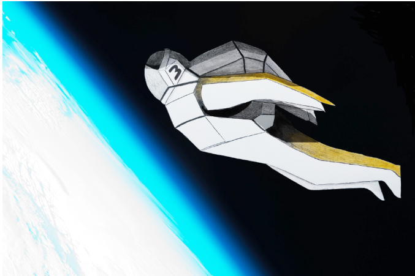

<div class="all">
<button class="btnAux" mat-button routerLink="/">Inicio</button>

<div *ngIf="isOnHomePage">
  <h1>Clasificación naves espaciales</h1>

  

  <h2>Escoger el tipo de nave</h2>

  <mat-form-field>
    <mat-label>Selecciona un valor</mat-label>
    <mat-select [(ngModel)]="selectedValue" (selectionChange)="onSelectionChange()">
      <mat-option *ngFor="let option of options" [value]="option.value">
        {{ option.viewValue }}
      </mat-option>
    </mat-select>
  </mat-form-field>
</div>
<router-outlet></router-outlet>
</div>
